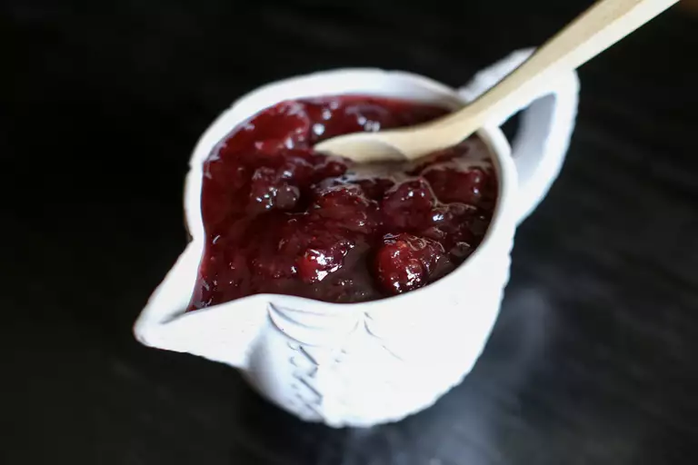

Jalapeño Cranberry Sauce

A Spicy and Sweet Combo
This jalapeño cranberry sauce is moderately spicy, but not overpowering. It also makes a lovely condiment for sandwiches. Leave some jalapeño seeds in if you like it spicier!
If you enjoy a bit of heat in your dishes, the jalapeño in the cranberry sauce provides a subtle spicy kick without overwhelming the overall flavor.
Ingredients
- 1 cup fresh or frozen cranberries
- 1/2 cup sugar
- 1/2 cup water
- 1 jalapeño pepper, seeds removed and finely chopped
- Zest of 1 orange
- 2 tablespoons orange juice
Steps
- In a saucepan, combine cranberries, sugar, water, chopped jalapeño, orange zest, and orange juice.
- Bring the mixture to a boil over medium heat, stirring occasionally.
- Reduce the heat to low and simmer for about 10-15 minutes or until the cranberries burst and the sauce thickens.
- Allow the sauce to cool before serving. It will continue to thicken as it cools.